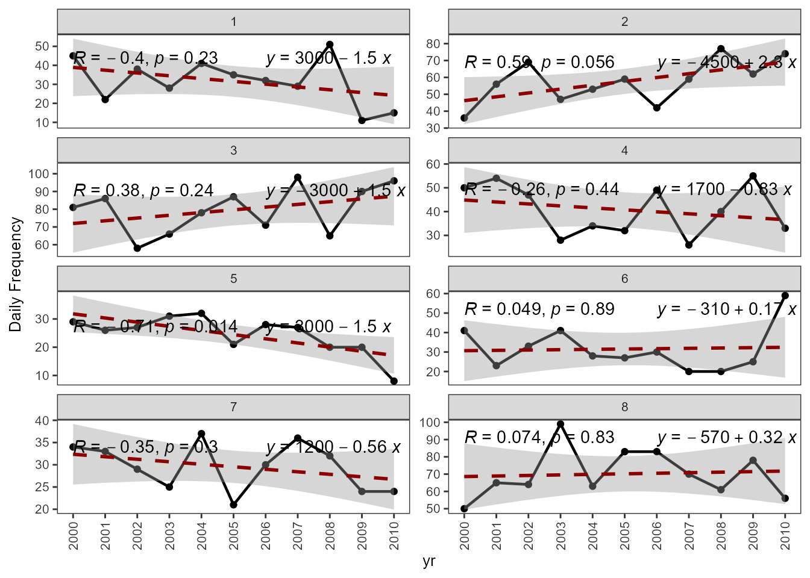

Extracting metrics from the synoptic classification
Marc Lemus-Canovas
2021-04-21
Source:vignettes/classification_metrics.Rmd
classification_metrics.RmdThis vingette will show you how to compute some metrics from our synoptic classification. To this end, we will mainly use dplyr() and tidyr() packages from the tidyverse.
Computing a simple synoptic classification
Here we provide a simple example for computing a simple synoptic classification using mslp as a variable. In this case, we we will use the “S-mode” matrix.
library(synoptReg)
library(lubridate)
library(dplyr)
library(tidyr)
library(rnaturalearth)
library(metR)
library(ggplot2)
library(ggpubr)
slp_file <- system.file("extdata", "mslp_ei.nc", package = "synoptReg")
slp <- ReadNetCDF(file = slp_file,vars = "msl",out = "data.frame") %>%
setNames(c("time","lat","lon","value")) %>%
select(lon,lat,time, value) %>% mutate(time = as.Date(time))
vars <- tidy_nc(x = slp, name_vars = "mslp")
cl <- synoptclas(vars,ncomp = 4,norm = T,matrix_mode = "S-mode")
borders <- ne_countries(continent = c("europe","africa"),
returnclass = "sf")
ggplot()+
geom_raster(filter(cl$grid_clas, var == "mslp"),
mapping = aes(lon,lat,fill = mean_WT_value/100),
interpolate = T,hjust = 0,vjust = 0)+
geom_sf(data = borders, fill = "transparent")+
geom_contour2(data = filter(cl$grid_clas,var == "mslp"),
aes(x=lon,y=lat,z=mean_WT_value/100),
binwidth = 4, color = "black") +
geom_text_contour(data= filter(cl$grid_clas, var == "mslp"),
aes(x=lon,y=lat,z=mean_WT_value/100),
stroke = 0.15,binwidth = 4) +
guides(fill = guide_colourbar(barwidth = 9, barheight = 0.5))+
facet_wrap(~WT, ncol = 4) +
scale_fill_gradientn(colours = pals::jet(100),name = "slp (hPa") +
scale_x_continuous(limits = c(-15,15), expand = c(0, 0))+
scale_y_continuous(limits = c(30,55), expand = c(0,0))+
theme_bw() +
theme(
panel.grid.major = element_blank(),
panel.grid.minor = element_blank(),
panel.background = element_blank(),
text = element_text(size = 10),
strip.background = element_rect(fill = "transparent", color = NA),
axis.title = element_blank(),
axis.text = element_blank(),
axis.ticks = element_blank(),
legend.position = "bottom")
Extracting monthly relative frequences
How to extract the monthly relatives frequencies per WT?
clas <- cl$clas
# monthly frequence histogram
mo_hist <- clas %>%
mutate(mo = month(time)) %>%
group_by(WT,mo) %>%
mutate(n = length(time)) %>%
ungroup() %>%
group_by(WT) %>%
mutate(n_prop = n/length(time)) %>%
distinct(WT,mo,.keep_all = T) %>%
complete(mo, WT = 1:8,
fill = list(n_prop = 0))
ggplot(data = mo_hist, aes(x = mo, y = WT,fill = n_prop))+
geom_tile(color = "black") +
scale_fill_gradientn(colors = pals::brewer.blues(100),
name = "Daily Relative \nFrequency",
breaks = seq(0,1, by = 0.1)) +
geom_text(aes(label=round(n_prop,2)), size = 4)+
scale_x_continuous(name="Month",
breaks = seq(1,12,1),
expand=c(0,0)) +
scale_y_continuous(breaks = seq(1,8,1),expand = c(0,0))+
theme_classic()+
labs(title = "Monthly relative frequence by WT")+
theme(plot.title = element_text(color="black",
size=10,
face="bold"),
axis.text=element_text(size=8),
axis.title.x = element_text(size = 8),
axis.title.y = element_text(size = 8),
legend.title=element_text(size=8),
legend.text=element_text(size= 8),
legend.position="bottom")
Extracting annual frequency trends
How to extract the trend of annual frequences per WT?
WT_time_series <- clas %>%
mutate(yr = year(time)) %>%
group_by(yr,WT) %>%
mutate(n = length(time)) %>%
ungroup() %>%
distinct(WT,yr,.keep_all = T) %>%
select(-time) %>%
complete(yr, WT = 1:4,
fill = list(n = NA))
ggplot(data = WT_time_series, aes(x = yr, y = n))+
geom_point()+
geom_line(size = 0.8) +
scale_x_continuous(labels = seq(2000,2010,1),
breaks = seq(2000,2010,1),
minor_breaks = seq(2000,2010,1)) +
stat_smooth(method = "lm",
formula = y ~ x,
size = 1,
color = "red4",
linetype = "dashed") +
stat_cor()+
stat_regline_equation(label.x = 2006)+
facet_wrap(~ WT, ncol = 2,scales = "free_y") +
theme_bw() +
theme(axis.text.x = element_text(colour="grey20",
size=8,
angle=90,
hjust=.5,
vjust=.5),
axis.text.y = element_text(colour="grey20",
size=8),
text = element_text(size=10),panel.grid = element_blank()) +
ylab("Daily Frequency")